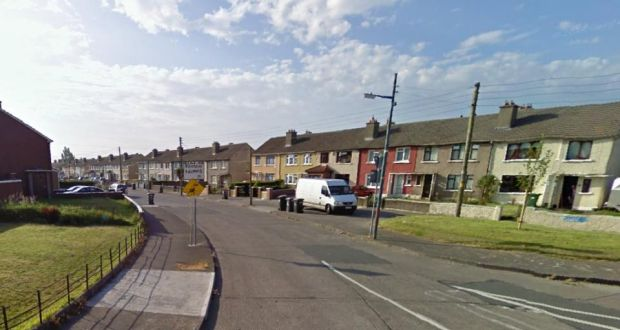
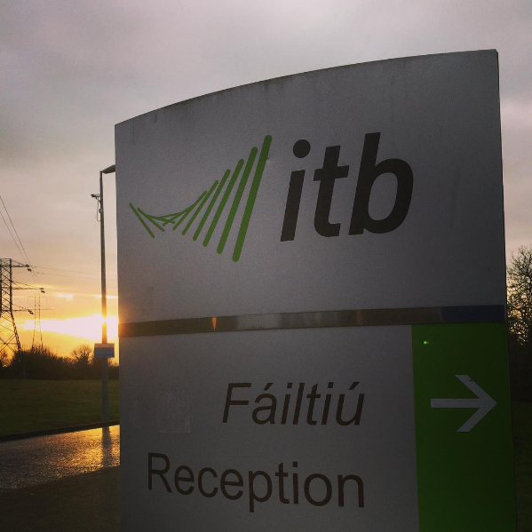

Dan was born on the 12th of November, in 1998 in Dublin, Ireland.
He is currently living in Kells, Co. Meath, Ireland.
He enjoys creative ways of spening his time, such as photography, video making and editing for YouTube, and Website Development.

- Started his education in St. Michael's, Ballyfermot
- After a few months in St. Michael's, he moved to St. Mary's, Kells
- He later moved up into St. Colmcille's BNS, Kells
-
After graduating Primary School, he moved up into St. Ciaran's Community School, Kells
- Here he studied Home Economics, Science, Art, Woodwork, Physics, Economics, DCG, Maths, Irish and English
- At the end of his third year, he was awarded the Deputy Principal's award
- He is now studying Creative Digital Media in The Institute of Technology in Blanchardstown
- Video Creation
- Web Development
- Art
- Directing
- Airsoft
- Hiking
- Playing Guitar
- Video Games
- Going out with friends
- Photography
- Contact Information
- For college related enquiries:
- For personal related enquiries:
- For YouTube related enquiries: